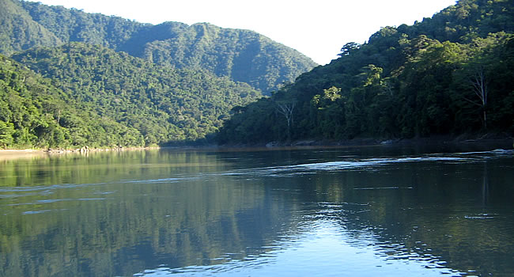
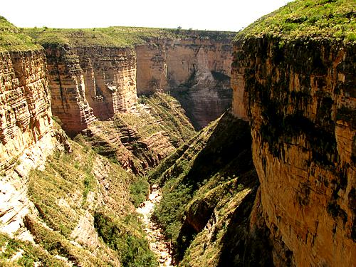
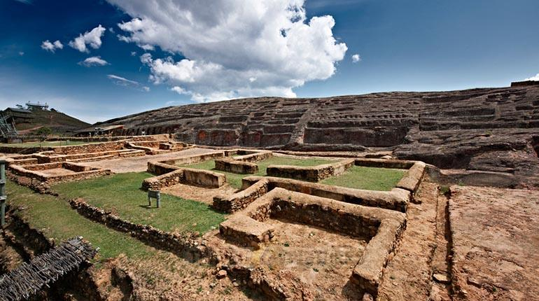

Salar de Uyuni
Potosi, Bolivia
El mayor desierto de sal del mundo, famoso por su efecto espejo y horizontes infinitos.
Explora experiencias visuales y guarda tus destinos favoritos con un toque.
Potosi, Bolivia
El mayor desierto de sal del mundo, famoso por su efecto espejo y horizontes infinitos.

Cochabamba, Bolivia
Monumento panoramico que mira sobre la ciudad desde el cerro San Pedro.

La Paz, Bolivia
Reserva amazonica de enorme biodiversidad, rios, selva y vida silvestre.

La Paz, Bolivia
Lago sagrado de altura con islas historicas, comunidades andinas y aguas profundas.

Potosi, Bolivia
Paisaje de canones, cavernas y huellas de dinosaurios entre formaciones rocosas.

Santa Cruz, Bolivia
Sitio arqueologico tallado en roca, rodeado por valles verdes e historia prehispanica.